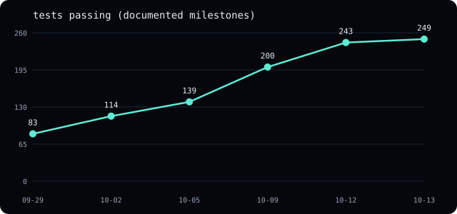
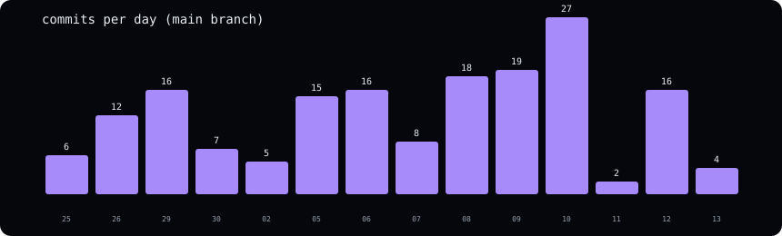

Project status — 2026-10-12
Where the Astral Project stands, in numbers, diagrams, and gates. Every
figure below is derived from the repository itself (the test suite, file
birth dates, git log, the audit follow-ups note); sources are stated per
figure so nothing here relies on memory. Supersedes
status-2026-10-10.md, which stays as history.
Headline numbers
| Metric | Value | Source |
|---|---|---|
| Tests passing | 249, 0 failing | cargo test --workspace, 2026-10-13 |
| Clippy / fmt | zero warnings / clean | same run, -D warnings |
| Crates | 8 (record, book, types, normalize, replay, exec, harness, python) | workspace members |
| Spec/runbook docs | 10, all built to the site | docs/ + website/build.py |
| Research notes published | 13 (3 negative + carry trilogy + band gradient + full year + sessions + halt positioning + persistence trilogy) | research/001-* through 013-* |
| Commits on main | 171 across 14 active days | git log |
| Live venues verified | Binance + Bybit captures, Coinbase trades/tickers | README verification record |
| Open audit findings | 1 of 13 still open (tail holes, documented) | docs/audit-2026-10-06.md follow-ups |
| Seed benchmark corpus | 2 reproducing runs out of the box | benchmark-corpus/ + verify verdicts |
Growth

Test counts come from commit messages that state them (83 on 09-29, 114 on
10-02, 139 on 10-05, 200 on 10-09) plus direct measurements (243 on 10-12,
249 on 10-13, cargo test --workspace) — milestones, not continuous
sampling.
The slope is real work, not test inflation: each jump arrived with the
feature it covers (adversarial fixtures, replay events, exec/harness,
streaming ports, markouts, property sweeps, sweep subcommand).

Ten pushes on 10-10 through 10-12 closed every code-actionable audit item: streaming replay, streaming normalize, normalized replay, streamed reconstruct/compare, maturin packaging, Python loop bindings, snapshot guidance, markouts, Fixed properties, the determinism gate, and the seed corpus — each pushed and verified separately.
System map
flowchart LR
A[Exchange WebSocket] --> B[raw immutable frames]
B --> C[compressed chunks<br/>streamed readers · SHA-256 index]
C --> D[normalised Parquet<br/>streamed · read-back equal]
C --> E[deterministic replay<br/>raw ≡ normalised signals]
E --> G[exec-v1 fills + markouts<br/>print-through · horizons]
G --> H[benchmark harness<br/>one replay · N probes]
H --> I[hashed report<br/>registry · verify · seed corpus]
D --> J[research notes<br/>negatives first-class]
P[Python SDK<br/>loop from a notebook]
E --> P
D --> P
classDef done fill:#0d3b34,stroke:#5eead4,color:#e6edf3
classDef partial fill:#3a2f10,stroke:#fbbf24,color:#e6edf3
classDef missing fill:#1a1f2b,stroke:#4b5563,color:#8b949e
class A,B partial
class C,D,E,G,H,I,J,P done
Gate funnel
flowchart TD
G1[Gate 1 — capture & reconstruct<br/>code complete · evidence pending]
G2[Gate 2 — does it work<br/>markouts built · calibration open]
G3[Gate 3 — useful research<br/>4 notes, carry window done · live-carry open]
G4[Gate 4 — others use it<br/>seed corpus ready · humans missing]
G1 -->|72h soak + 2nd machine| G2
G2 -->|shadow error small| G3
G3 -->|one substantive note| G4
G4 -->|5 users · 2 reproductions| G5[Beyond — defined by Gate 4]
classDef open fill:#3a2f10,stroke:#fbbf24,color:#e6edf3
class G1,G2,G3,G4 open
Each gate has a kill criterion in ROADMAP.md (10 bps model error, 3
fruitless months, 6 userless months). The funnel is honest about what blocks
each step: wall-clock evidence and other humans, both unhurriable by commits.
Audit closure funnel
13 findings entered; 12 closed: overflow guards, soak backoff, manifest
trust, schema gate, book errors, all CLI formats, trade sides, reconstruct
gaps, sequence breaks, used-dir refusal, gap numbers, fuzz coverage —
plus streaming (replay, normalize, reconstruct, compare, all measured),
behavioral unification (replay_normalized: null rows replay as skips,
raw ≡ normalized proven), snapshot guidance without a memory-mapped
format, and the determinism gate. Open: tail holes (finding 9, documented
as correct-by-construction). Post-audit hardening with README rows:
decimal range, corrupt prints/sizes, BookTop gap-breaking, verify path
validation, non-UTF8 skips, fee-error naming, gap-number recovery, seeded
fuzzing, partition-by-instrument, index-count verification,
undecodable-abort coverage, trade price range, failure-policy quiet
corners, Fixed rounding ties, markouts, seed corpus. Full table in the
audit doc.
What ends the OSS
What closes Gates 1–3 from here: the soak and second-machine evidence (both need hardware outside this machine), calibration/shadow measurement (weeks of observation), a substantive research note (needs a data window, e.g. funding carry once perp streams are reachable), and external users (need outreach, not code). The code is done to the strategy's definition — every "code open" item in the progress ledger is now built, measured, and pinned. What remains is evidence and humans.